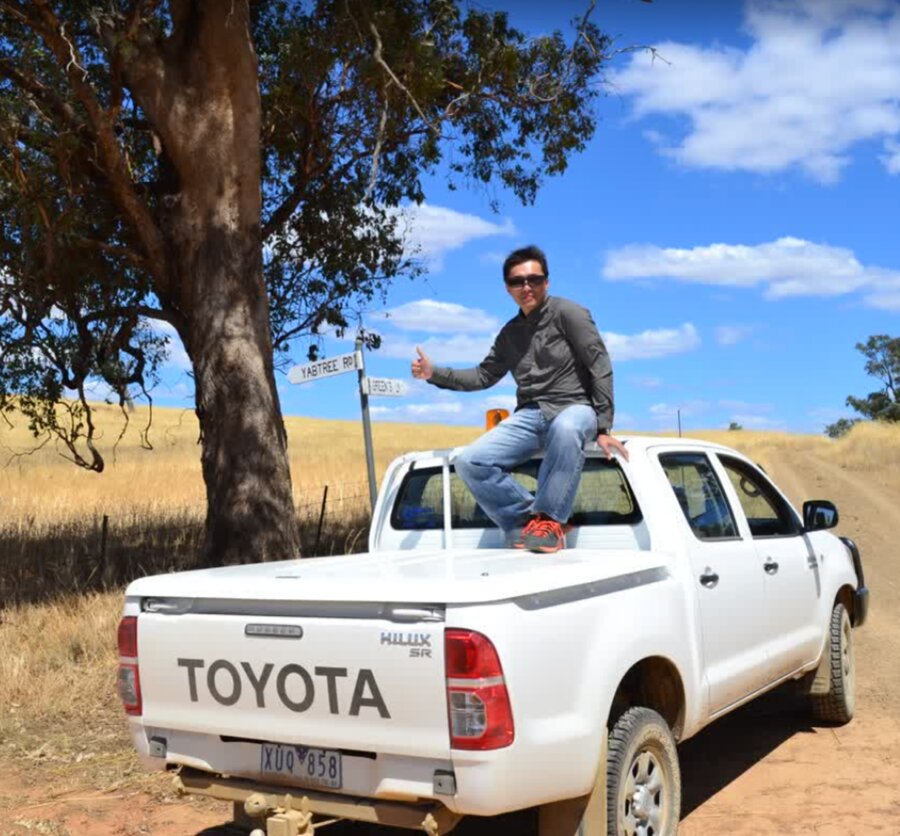

Spatial Data Scientist. A Curious Observer. Occasional Cyclist. Amateur Fisherman.
I have the following hobbies :
My favorite website is official page for Montague Street Bridge in Melbourne, the most loved urban legend bridge that constantly being hit by trucks